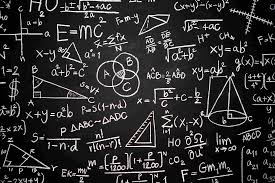

A farmer wanted to know how much fertilizer to apply, how much profit a farm would make, and how to predict future harvests. The answers required calculations, analysis, and logical thinking. Elective Mathematics provides the tools needed to make better decisions in agriculture, business, science, and technology.
Elective Mathematics is an advanced mathematics subject that develops analytical thinking, quantitative reasoning, and problem-solving skills. It is useful in agriculture, engineering, economics, data analysis, and many scientific fields.
Many students think Elective Mathematics is only about solving difficult questions. In reality, it develops critical thinking and decision-making skills that are valuable in agriculture, finance, technology, business, engineering, and everyday life.
This is only a small introduction. If you want to understand how programmes connect to university courses, careers, opportunities, and future success, get a copy of:
The guide designed to help students make informed decisions about their future and discover opportunities they may never have considered.